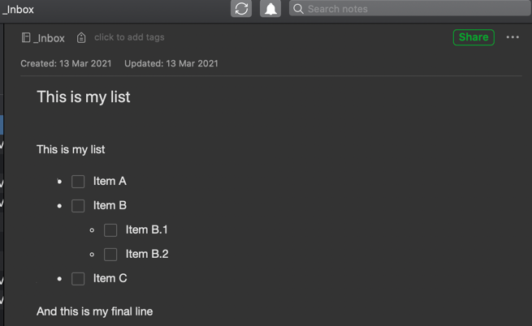

I’m having trouble getting lists of TODO items in Drafts to show up as lists of checkbox items in Evernote. I’m using the built-in action from iOS, and all the other Markdown formatting converts fine so I think the action is configured correctly.
The Markdown in question looks like this:
My Section
[ ] My task description 1
[ ] My task description 2
[ ] My task description 3
[ ] …
These show up as bullet lists in Evernote, with each bullet starting with paired square brackets instead of a checkbox.
Removing the dashes just causes the text to show up in a single paragraph, vs line-by-line.
Any suggestions for how to fix or work around this?
Thank you @sylumer. I did see those, but they don’t seem to support indented checklists, and I’m not clear why they are needed since I thought Evernote conversion was built-in.
I think maybe my fundamental question is whether translation of checklists to ENML is officially supported by Drafts or not. As I understand it, the checklists are part of GitHub-flavored Markdown, so I assumed Drafts would convert them as part of the built-in functionality. Can you (or someone) confirm this is NOT the case? If not, then I can explore workaround via scripting, maybe extending the Evernote As Todos action you kindly referred me to.
Your original post didn’t have any indented checklists, but looking at the Evernote as Todos action referenced in the above, the regular expressions look like they should convert okay - i.e. there is nothing to say they must appear at the start of a line.
Evernote conversion is a peculiar beast in that it is ENML rather than HTML, which is not a direct translation. This can lead to inconsistencies. The steps and code used by Draft’s actions tend to try and account for this in-line with what the Evernote API (which in itself has a highly dubious history) supports.
Is ENML built into the core Drafts app as a supported format? No.
Does Drafts provide tools to convert content between formats and to write that content to Evernote via the Evernote API? Yes.
Drafts has a Markdown conversion engine that will convert GFM to HTML. It is not intended to also convert direct to ENML.
Can you share an example of Draft content that does not convert as you expected?
Note: Because the forum interprets Markdown, please place it between triple backticks as a code block.
e.g., entering…
```
- [ ] Foo
- [ ] Bar
```
… would then show in the forum as …
- [ ] Foo
- [ ] Bar
With an example and maybe a few words or screenshot of what you get and what you would like to get; that could help in tailoring the existing action to work for you.
Honestly, at this particular point, I can’t recommend building any integrations for Evernote in Drafts. We state as much in the integration guide. They have, without notice dropped support for several of their methods of integration, and made no clear public statements about the future of the API that exists. The Evernote action step only continues to work because we are maintaining our own fork of their iOS SDK which they abandoned and no longer support.
The functionality continues to be there for compatibility and to support existing users on iOS, but not sure how long it will continue to function.
So, yes, the example To-Do action we provide could be modified to support nested lists, but I wouldn’t rely on it because it may stop functioning on any given day depending on Evernote’s changes.
Thanks @sylumer. After reading the helpful @agiletortoise response below I’m questioning whether this is worth pursing given how unreliable the Evernote integration path seems to be, but since you took the time to write such a detailed response (thank you), you are right that my original example didn’t show the intended lists due to formatting errors on my part.
Here is an example intended Markdown list, with checkboxes, that I’m hoping to convert:
This is my list
- [ ] Item A
- [ ] Item B
- [ ] Item B.1
- [ ] Item B.2
- [ ] Item C
And this is my final line
When I run this through the Save To Evernote action, I get an Evernote page that looks like this (simulated using this forum’s formatting):
I then used the action referenced in the second of the posts I originally referenced above that is intended to convert MD check boxes to ENML todo entries.
When I did that I got this in Evernote.

This looks exactly how I’d expect and included the indentations.
Could you try it again with your example and check your results are the same as mine?
I’m not sure if you’re still pursuing Evernote integrations with your workflow, but there’s an action by @akay64 called Save to Evernote (Full Formatting) that works beautifully for indented checklists and more. The action is in the Action Directory: Save to Evernote (Full Formatting) | Drafts Action Directory.